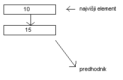
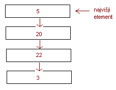
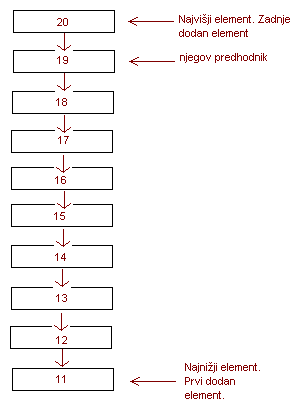

| C++ Sklad
Avtor: napsy
Objavljeno: 15.05.2003, ob 15:47:57.
V tem vodiču vam bom razkril, kako implementirati svoj lasten sklad v programskem jeziku C++. Najprej pa nakaj besed v skladu.
1. Uvod
Sklad(ang. stack) uporabljamo vsak dan in to ne, da bi se tega zavedali. Kje ga pa uporabljamo? Poznate funkcijo undo in redo, ki ju imajo vsi manj napredni in napredni urejevalniki besedil? Veste, da delujejo s pomočjo sklada? V sklad "potisnemo" vsako spremembo, ki jo naredimo. In če se kje kaj polomi program enostavno "porine" prejšno stanje v programu.
Začeli pa bomo pri najnižjem nivoju(beri assembler). Tudi zbirni jezik(ang. Assembler) ima ukaz za klicanje skladišča. To sta ukaza push in pop. Ukaz push v sklad doda predmet in pop ga prikliče nazaj. Predmeti v skladu se dodajajo eden na drugega. Se pravi prvi dodan predmet bo klican zadnji.
Primer:
1. mov ax, 15
2. mov bx, 10
3. push ax
4. push bx
5. add bx, ax
6. mov cx, bx
7. add ax, cx
8. mov dx, ax
9. pop bx
10. pop ax
Kaj naredijo te instrukcije:
1.v register ax premakne vrednost 15
2.v register bx premakne vrednost 10
3.v sklad doda vrednost, ki jo vsebuje register ax
4.v sklad doda vrednost, ki jo vsebuje register ax
5.sešteje vrednosti iz registra ax in bx, ter vrednost zapiše v register bx
6.premakne vrednost registra bx v register cx
7.sešteje prejšnji rezultat z številom v registru ax in novi razultat premakne v ax
8.novi rezultat pomakne iz registra ax v register dx
9.kliče sklad in vrnjeno vrednost dodeli registru bx
10.kliče sklad in vrnjeno vrednost dodeli registru ax
S pomočjo sklada imamo sedaj v registru ax in bx števili, ki smo ju sešteli, v registru cx pa rezultat in v registru dx novi rezultat rezultata in števila, ki se je nahajal v registru ax. Sklad pa zgleda nekako takole:
2. 15
1. 10
Grafično pa takole:

V tabeli bo kot prvi element iz sklada vrnjen zadnje dodan element. Kot drugi element bo vrnjen prvi element, ki je bil vnešen v sklad. To kodo zbirnega jezika lahko testirate s programom debug, ki je vkljueen poleg MS-DOS in Windows sistemov.
Primer:
Ee bi v sklad zaporedno dodajal cifre 3, 22, 20, 5, bi sklad grafično zgledal takole:

2. C++ sklad
Standardni C++ že vsebuje sklad. Inplementiran ja v standardnih knjižnicah šablon (Standard Template Library oz. STL). Seveda ga lahko kar takoj uporabimo, a dobro je stvar razumet. Posebej tedaj, ko se kje med delom z skladom kaj zatakne. Zato bomo napisali svoj lasten C++ sklad.
Sklad bo nudil 5 osnovnih metod. Te so:
- nalaganje v sklad - push()
- klicanje iz sklada - pop()
- prikaz velikosti sklada - size()
- praznenje sklada - clear()
- preverjanje, če je sklad prazen - empty()
2.1. Glava
Najprej bomo v program vstavili tipično c++ knjižnico iostream in prevajalniku povedali, da želimo vstopiti v std imenski prostor. Po tem naredimo kalup za naš glavni razred.
#include <iostream>
using namespace std;
template <class T>
Sedaj lahko ustvarimo razred z imenom Cstack in vanj deklariramo vse elemente, ki bodo zasebni (ang. private).
Najprej smo v razredu ustvarili nov razred z imenom CerrorReport, ki bo služil za delo z izjemami. V tem razredu je še razred EmptyStack, ki je dejanska izjema, ki se bo uporabila pri prekoračitvi klicanja predmetov iz sklada.
class CStack
{
/* Upravljanje z izjemami. */
class CErrorReport
{
public:
/* Izjema za prazen sklad. */
class EmptyStack { };
};
Po razredu CerrorReport stoji razred node, ki predstavlja element, ki bo v skladu. Element pa bo vseboval vrednost, ki jo bo programer potisnil v sklad in kazalec na prejšnji element. Namreč vsi elementi morajo biti med sabo povezani. Vsak element razen prvi ima svojega predhodnika.
/* Razred elementa. */
class node
{
public:
/* Vrednost. */
T value;
/* Kazalec na prejšnji element. */
node *previus;
};
Nato še deklariramo števec elementov v skladu in kazalec na trenutno najvišji element v skladu.
/* število elementov v skladu. */
unsigned int StackSize;
/* Najvišji element. */
node *TopNode;
public:
2.2. Metode
Sklad ima 5 najosnovnejših metod:
- push(), ki sprejme en parameter določenega tipa in ga v sklad vrine
- pop(), ki vrne vrednost iz sklada
- empty(), ki vrne boolean vrednost true, če je sklad prazen
- size(), ki vrne celoštevilčno število velikosti sklada
- clear(), ki uniči vse elemente v skladu
Napisali bomo deklaracije metod, ki so izven razreda:
CStack();
~CStack();
/* Polaganje v sklad. */
void push(T value);
/* Klicanje iz sklada. */
T pop();
/* Velikost sklada. */
inline int size() { return(StackSize); }
/* Preverjanje sklada. */
bool empty();
/* Čiščenje sklada*/
void clear();
};
Ker je razred kalup, so definicije metod zunaj razreda na videz malo bolj zapletene. Prve dve metodi pa naj bosta konstruktor in destruktor:
template <class T> CStack<T>::CStack()
{
StackSize = 0;
TopNode = NULL;
}
template <class T> CStack<T>::~CStack()
{
/* Ob končanem delu počistimo sklad. */
clear();
}
Konstruktor nam inicializira števec elementov v skladu in postavi najvišji element na nič(null). Destruktor nam pa počisti celoten sklad.
2.2.1. Metoda push()
Sedaj pride na vrsto metoda push(), ki element položi na sklad:
template <class T> void CStack<T>::push(T value)
{
Ustvariti moramo nov element in mu prirediti podano vrednost:
/* Ustvarimo novi element. */
node *NewNode = new node;
/* Dodelimo elementu vrednost. */
NewNode->value = value;
Nato preverimo, če je element prvi element, ki ga dodajamo v sklad. Če je, potem nima predhodnika. Če element ni prvi v skladu, potem je njegov predhodnik trenutno najvišji element.
/* Če je to prvi element v skladu, bo kazalec na prejšnji
element prazen(NULL). */
if (StackSize == 0)
NewNode->previus = NULL;
else
/* Prejšnji element je trenutno najvišji element. */
NewNode->previus = TopNode;
Sedaj moramo novi element postaviti kot najvišji element in povečati števec elementov v skladu.
/* Sedaj je najvišji element na novo ustvarjen element. */
TopNode = NewNode;
/* Povečamo velikost sklada. */
StackSize++;
}
2.2.2. Metoda pop()
Z metodo pop() bomo klicali element iz sklada. Ustvarili bomo začasen element, ki ne bo položen na sklad, ampak bo služil le zato, da si bomo zapomnili kateri je trenutno najvišji element. To pa zato, ker se bo najvišji element v nadaljevanju spremenil in moramo vedeti, kateri element lahko uničimo.
Preden nadaljujemo z izvajanjem metode, preverimo, če je morda sklad že prazen in preprečimo sesutje programa. Enostavno pregledamo velikost sklada in če je ta enaka 0, vrže metoda izjemo EmptyStack.
template <class T> T CStack<T>::pop()
{
/* Začasna noda. */
T value;
node *temp = TopNode;
if (StackSize == 0)
/* Vržemo izjemo, če je sklad prazen. */
throw CErrorReport::EmptyStack();
Ko smo končali s preverjanjem velikosti sklada, lahko preberemo vrednost, ki jo vsebuje element. Nato predhodnik trenutno najvišjega elementa postane najvišji element in ker imamo začasen element, ki kaže na prejšnji najvišji element, lahko mirne duše počistimo element. Preostane nam le še zmanjšanje števca elementov v skladu.
/* Preberemo vrednost v najvišjem elementu. */
value = TopNode->value;
/* Najvišji element postane en element nižje od trenutno najvišjega. */
TopNode = TopNode->previus;
/* Zbrišemo element v skladu, ki smo ga prebrali. */
delete temp;
/* Zmanjšamo število elementov v skladu. */
StackSize--;
return(value);
}
2.2.3. Metoda empty()
Metoda empty je preprosta metoda, ki vrne vrednost tipa boolean. Vrne pa resnico, če je sklad prazen in laž če element vsebuje vsaj en element.
template <class T> bool CStack<T>::empty() {
/* Če je sklad prazen, vrne 1 (true), če ni pa vrne 0 (false). */
if (StackSize > 0)
return(0);
return(1);
}
2.2.4. Metoda clear()
Metoda clear uniči vse elemente v skladu. Nalogo pa naredi tako, da naredi začasni element, ki kaže na najvišji element. Preden počisti lokacijo najvišjega elementa v pomnilniku, njegov predhodnik postane najvišji element. Nato začasno nodo(dejansko najvišji element) počisti. To dela tako dolgo, dokler število elementov v skladu ni enako nič.
template <class T> void CStack<T>::clear() {
/* Začasna noda. */
node *temp = NULL;
/* Pobriše vsak element v skladu. */
for (int i = 1; i <= StackSize; i++) {
temp = TopNode;
TopNode->previus = TopNode;
delete temp;
}
StackSize = 0;
TopNode = NULL;
}
2.3. Primer uporabe
Naredili smo lasten sklad v C++ programskem jeziku! Sedaj je prišel čas, da preizkusimo zver. Naredili bomo program, ki v sklad dodaja števila od 11 do 110. Ta števila se bodo nato iz sklada poklicala in izpisala na zaslon.
int main(int argc, char *argv[])
{
CStack<int> *MojSklad = new CStack<int>;
int temp = 0;
for (int x = 0, y = 11; x < 10; x++, y++)
MojSklad->push(y);
cout << "Velikost sklada: " << MojSklad->size() << endl;
while (MojSklad->empty() != 1) {
try {
temp = MojSklad->pop();
cout << "Prebral " << temp << endl;
}
catch (CStack<int>::CErrorReport::EmptyStack) {
cout << "Sklad je prazen!" << endl;
}
}
cin.get();
delete MojSklad;
return(0);
}
Ee poženete program, bi morali na zaslonu videti naslednje:
Velikost sklada: 10
Prebral 20
Prebral 19
Prebral 18
Prebral 17
Prebral 16
Prebral 15
Prebral 14
Prebral 13
Prebral 12
Prebral 11
Kot opazite, se številke izpisujejo po vrstnem redu zadnja-je-prva. Sklad grafično zgleda nekako takole:

Upam, da razumete, kako sklad deluje. Izvorno kodo za članek lahko prenesete tukaj: sklad_main.cpp. Srečno programiranje.
|